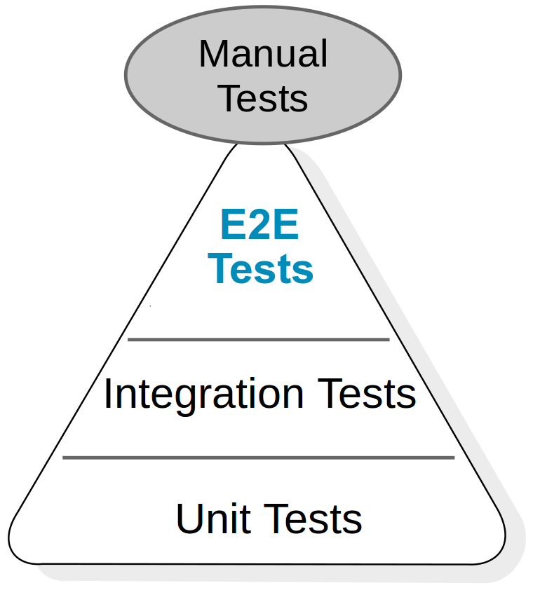
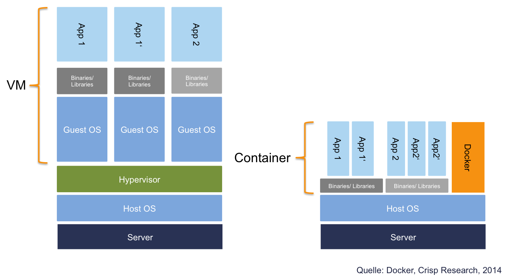
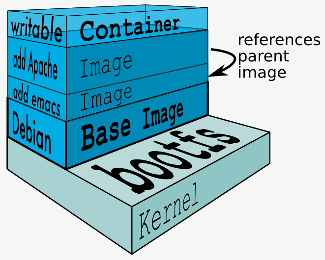
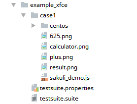
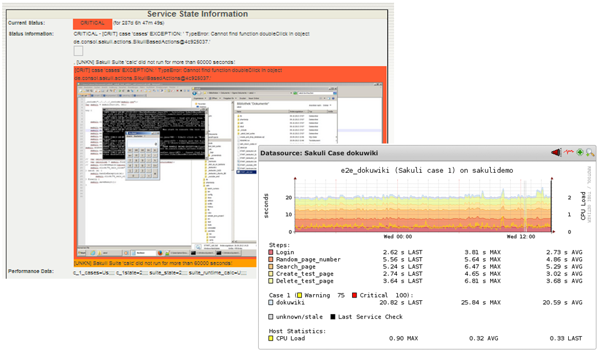
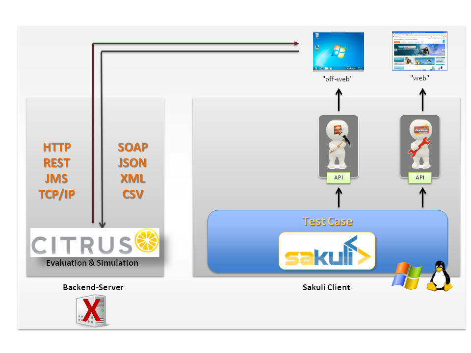

Containerized End-2-End-Testing
+
Created by Tobias Schneck @ ConSol*
Motivation

- Business-kritische Applikationen bestehen oft aus einer Vielzahl an Komponenten
- Applikations-Qualität aus Anwendersicht ist nur am Ende der Funktionskette messbar
- UI-Interfaces sind schwer kontinuierlich zu testen
Testpyramide
Anforderung an Testumgebungen
- robust
- keine "zufälligen" Fehler
- Fehler sind reproduzierbar
- unabhängig
- möglichst wenig Abhängikeiten zu externen Systemen
- Umgebung sollte exklusiv zur Verfügung stehen
- isoliert
- Tests habe keine Abhängikeit untereinander
- Tests sollten parallelisierbar sein
- schnell
- kurze Laufzeiten mit aussagekräfitgen Feedback
Besonderheiten bei End-2-End Tests
- unterschiedliche Testarten:
- Regressionstests
- funktionale Abnahmetests
- Parallele Tests in GUIs sind schwieriger
- geteilte Testdaten oder Login-User
- User-Sessions mit Stati
- Cleanup von Testdaten
- Testumgebung muss möglichst nah an der
End-User-Umgebung - manueller Testaufwand > Aufwand für Automatisierung
Vorteile der Container-Technologien
Hilfreich für End-End-Testing?
- Isolation von Umgebungen
- Nachvollziehbarer Aufbau der Umgebung
(z.B. durch Dockerfile) - Container starten on-the-fly
- einfache Parallelisierung
- Wenig Speicher-Overhead
- Teilen den selben Linux-Kernel
Virtuelle Maschinen vs. Container
(am Beispiel Docker)
Immutable Filesystem Layers
(am Beispiel Docker)

Herausforderung
- Web-UI-Test-Tools haben nur Zugriff auf DOM-Elemente
- Wie kann man Nicht-HTML-Inhalte testen bzw. damit umgehen? =>
Flash, PKI-Abfragen, Java Applets, Plugins

- Grafisch basierte Tests sind ressourcenintensiv
- OS unabhängiges Framework
- UI-Rendering testbar?
Was macht Sakuli?

|

|
|
|
Stärken der Vereinigung

|

|
Kategorie |
|

|
 |
|
Beschränkung auf den Browser |
|
|
|
|
Web Tests (DOM basiert) |
|
|
|
|
Open Source & Java API |

|
|
|
Automatisierbarkeit & Ergebnisauswertung über DB / Nagios / CI-Tools |
|
|
|
|
Unterstützung bei Testerstellung (Recorder, Screenshot-Finder) |
DEMO
File Structure
Test Case Aufbau
// tc.js
/*************************************
* Initialization of the JAVA backend
* and set warning and critical time
*************************************/
_dynamicInclude($includeFolder);
var testCase = new TestCase(60, 70);
var env = new Environment();
var appNotepad = new Application("gedit");
var region = new Region();
/******************************
* Description of the test case
******************************/
try {
//...
/************************************************
* Exception handling and shutdown of test case
**********************************************/
} catch (e) {
testCase.handleException(e);
} finally {
testCase.saveResult();
}
Aufruf von Sahi-Funktionen
// tc.js
/************************
* Call Sahi Functions
***********************/
_navigateTo("http://labs.consol.de/lang/en");
_highlight(_link("Projects"));
_click(_link("Projects"));
_highlight(_link("check_mysql_health"));
_click(_link("check_mysql_health"));
_highlight(_link("check_oracle_health"));
_click(_link("check_oracle_health"));
_setValue(_textbox("s"), "nagios");
_click(_link("Home[1]"));
testCase.endOfStep("project", 20);
Fluent API
/*** calculator app ***/
var calculatorApp = new Application("galculator")
.setSleepTime(1);
.open();
testCase.endOfStep("Open Calculator", 3);
/**********
* calculate 525 + 100
*********/
var calculatorRegion = calculatorApp.getRegion();
calculatorRegion.type("525");
env.sleep(2);
calculatorRegion.find("plus.png")
.click()
.type("100")
.find("calculate")
.click();
testCase.endOfStep("calculate 525 +100", 20);
Definition eines Ablaufs
// tc.js
/************************
* Some Variables
***********************/
var $cl_home = "http://labs.consol.de/lang/en";
var $cl_projekte = "Projects";
var $cl_c_mysql_h = "check_mysql_health";
var $cl_c_oracle_h = "check_oracle_health";
/************************
* Step for Notepad
***********************/
appNotepad.open();
env.type("Welcome to Sakuli!\n")
.type("I will help you to test your projects, like webapplications...\n")
.sleep(2);
testCase.endOfStep("notepad", 20);
/************************
* Step for labs.consol
***********************/
switchWindow();
_navigateTo($cl_home);
_highlight(_link($cl_projekte));
_click(_link($cl_projekte));
env.sleep(5)
.takeScreenshot("C:\\sakuli\\testscreenshot.png");
_highlight(_link($cl_c_mysql_h));
_click(_link($cl_c_mysql_h));
_highlight(_link($cl_c_oracle_h));
_click(_link($cl_c_oracle_h));
_setValue(_textbox("s"), "nagios");
_click(_link("Home[1]"));
testCase.endOfStep("project", 20);
/*****************
* print test client
*****************/
backToNotepad();
env.type("I can also test client applications, like gedit...\n")
.sleep(2);
testCase.endOfStep("print_test_client", 10);
Custom Functions
// tc.js
/**********
* TAB+ALT
*********/
function switchWindow() {
env.type(Key.TAB, Key.ALT);
}
/***************
* Go back to notepad
**************/
function backToNotepad() {
switchWindow();
env.type("Finish!\n\n");
}
Architektur

Nagios Integration
Erweiterbarkeit
Ausblick - Queue Architektur
- Skalierung durch Client-Worker-Prinzip
- Einfachere Wartung
- Zentraler Scheduler

Ausblick & Ideen
- Headless Execution - Linux: xvfb & Docker, Windows: ?
- Video-Aufzeichnung der Testabläufe zur Fehlerdokumentation
- Asynchrone wait Funktionen / Callbacks
- Grafische Auswertung der Testergebnisse in CI-Umgebungen